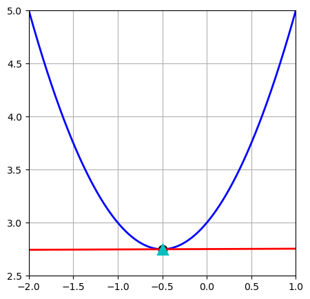

Gradient descent#
Gradient descent is a common method used to find minimum of a function.
Below is a simple demonstration of using gradient descent method to find the minimum of a scalar function. Example function,
Its derivative is
import sympy as sp
# symbol
x = sp.symbols('x')
# example toy problem
a = sp.Integer(2)
b = sp.Integer(1)
c = sp.Integer(3)
# function
f = a/2 * x**2 + b*x + c
# gradient
f_x = sp.diff(f, x)
Start with an initial guess \(x_0\). At \(x_0\), the gradient is \(f'(x_0)\).
We march with a step of \(\alpha\).
The next position will be \(x_1 = x_0 - \alpha f'(x_0)\).
Then, we can march from \(x_1\) to the next position, such that \(x_2 = x_1 - \alpha f'(x_1)\). Each march is moving toward the minimum.
Repeating this procedure and eventually, we will arrive the minimum.
import numpy as np
import sympy as sp
import matplotlib.pyplot as plt
from IPython.display import display, clear_output
import time
# initial guess
x0 = 0.9
# stepping size
alp = 0.1
# numeric callables for fast plotting
f_fn = sp.lambdify(x, f, "numpy")
# plotting domain
X = np.linspace(-2, 1, 800)
# set up a single figure and reuse it
fig, ax = plt.subplots(figsize=(5, 5))
ax.set_xlim(-2.0, 1.0)
Yf = f_fn(X)
for iter in range(0, 31):
# gradient and value at current x0
grd = float(f_x.subs({x: x0}))
val0 = float(f.subs({x: x0}))
# tangent line: y = grd*(x - x0) + val0
Ytan = grd * (X - x0) + val0
# ----- visualization -----
plt.plot(X, Yf, 'b', lw=2, label='φ(x)')
plt.plot([x0], [val0], 'ko', ms=8, mec='k', mfc='none', mew=2)
plt.plot(X, Ytan, 'r', lw=2, label='tangent at x₀')
# ----- gradient-descent update -----
x1 = x0 - alp * grd
val1 = grd * (x1 - x0) + val0 # value on the tangent line at the stepped x
# time.sleep(0.5)
plt.plot([x1], [val1], 'c^', ms=10, mew=2)
plt.grid(True)
plt.axis([-2, 1, 2.5, 5])
# Animaiton part (dosn't change)
clear_output(wait=True) # Clear output for dynamic display
display(fig) # Reset display
fig.clear() # Prevent overlapping and layered plots
time.sleep(0.5) # Sleep for half a second to slow down the animation
# advance
x0 = float(x1)

<Figure size 500x500 with 0 Axes>
The analogy of this gradient descent is the Allen-Cahn type of phase fied model. For example,
Note that \(\phi(x)\) is a function with spatial variable \(x\), and \(F[\phi(x)]\) is functional of function \(\phi(x)\). The Gateaux derivative is the derivative of \(F\) with repsect to \(\phi\). Thus, the process will eventually leads to the function of \(\phi(x)\) that minimize the total energy, \(F[\phi(x)]\), of the system.